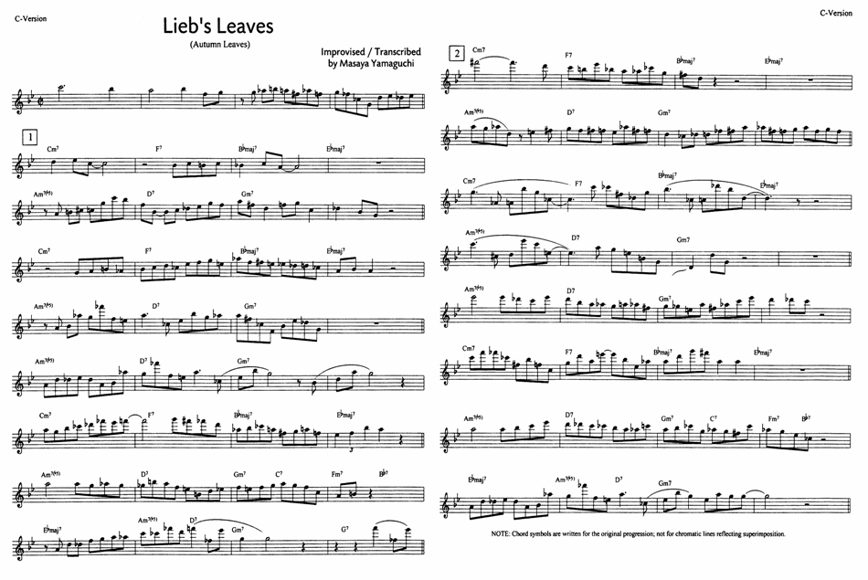

Chromaticism in Jazz
Applying Techniques and Concepts — Audio & Score Supplement
Exclusive audio resources and lead sheets for book purchasers.
Stellate Lite
Chromatic Solo Etude
Lead sheet notation (C-Version)
Lieb's Leaves
Chromatic Solo Etude
Lead sheet notation (C-Version)